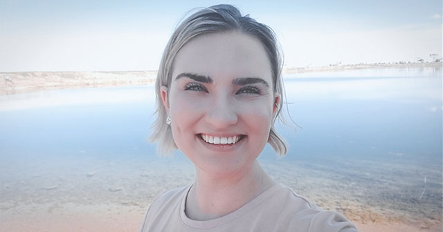

ABOUT US
- Edward Riewerts III
- I scheduled, moderated, and took notes for the meetings. I reviewed the code for bugs and managed version control merges using git-based software. I was one of the two main collaborators for the HTML code. I also worked on a little of the CSS specifically on the media queries. I also was part of the debugging process.
- Samantha Holly
- Velit dolor quis amet tempor eu irure enim reprehenderit incididunt eiusmod consequat nulla aliquip. Dolor sit fugiat est tempor occaecat in tempor consequat pariatur culpa consequat eiusmod. Anim tempor laboris exercitation cupidatat tempor qui sint esse excepteur reprehenderit ullamco magna reprehenderit sunt. Voluptate aliqua pariatur nulla cillum ea veniam ad veniam voluptate non minim. Pariatur occaecat occaecat in amet tempor est commodo duis. Incididunt est dolor sunt voluptate nulla in elit pariatur quis.

- Tara Speak
- I am currently a student at Bismarck State College pursuing an associate’s degree in Web Development and Design. For Two Plates© I wrote most of the CSS with some help from Edward and was in charge of the overall design esthetic. I also helped debug and edited some html code to better fit the CSS changes made.